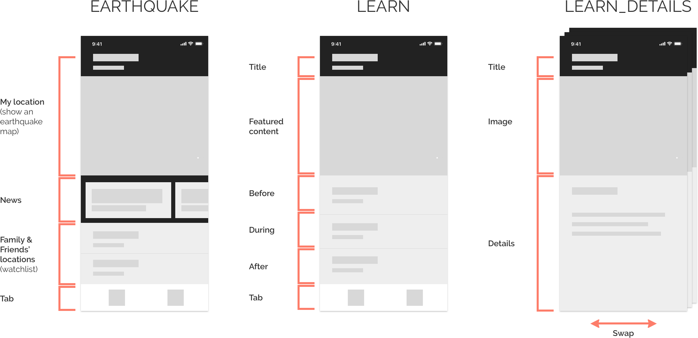

Prototyping an Earthquake App Using Framer
BACKGROUND
How to get my friends and colleagues prepared for an earthquake?
I freaked out when I found out a 7.0+ earthquake could happen in any minutes to the Hayward Fault where I live close by. I spent 4 hours researching how to get prepared. Next few days I quizzed my friends and colleagues on how well they prepare for an earthquake, and most of them, especially the younger ones, do not know the basic of "Drop, Cover, and Hold".
How to get my friends and colleagues prepared for an earthquake?
MY GOALS
Two birds with one stone
- Curate a list of safety tips for friends on earthquake preparation.
- Learn Framer by creating an earthquake app.
DESIGN PROCESS
Looking at the problem
- Last time when a 3.8 earthquake hit Oakland, my first reaction was to verify. Was it an earthquake? Actually, I'd like to receive a notification if an earthquake happens to me, or to my family and friends.
- Next thing my friends and I did was monitoring the news, even though a 3.8 earthquake did not create any damage, we wanted to stay up-to-date and feel connected. It is also recommended by USGS to monitor news for emergency information and instructions.
- Last but not least, to stay safe when an earthquake strikes, I want to get prepared before it happens.
Forming a simple solution
After validating the ideas with a few friends, I quickly wireframed an earthquake app.
Comparing with competitors and focusing on safety tips
By looking at various existing earthquake apps, I noticed most have features like alerts, watchlist, and interactive maps, but not safety tips. So I decided to focus on that. It also became more managable for me to prototype.
Learning Framer and Prototyping
Learning by doing was fun, even though at the beginning it was challenging. Be patient and learn the basics. And through trial and error, it got there.
PLAY WITH THE PROTOTYPE